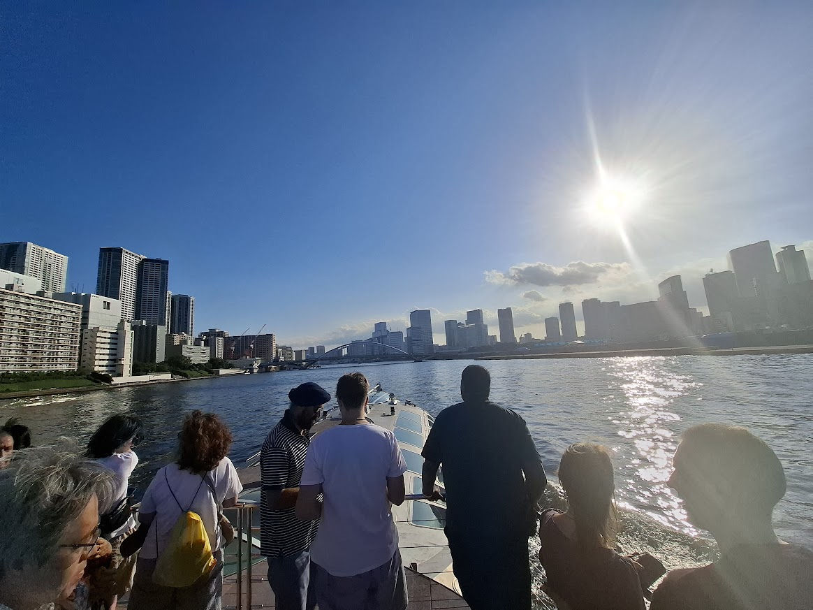
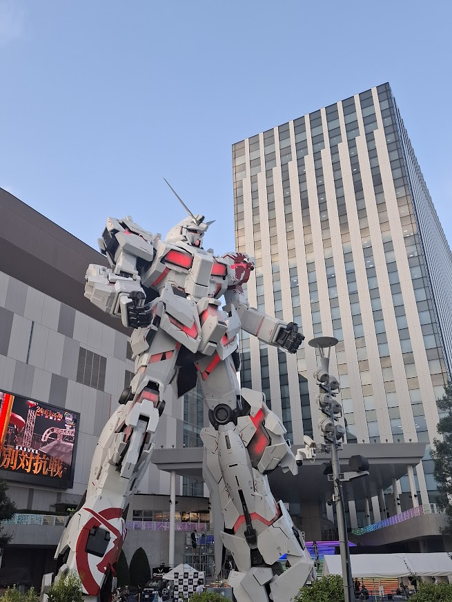
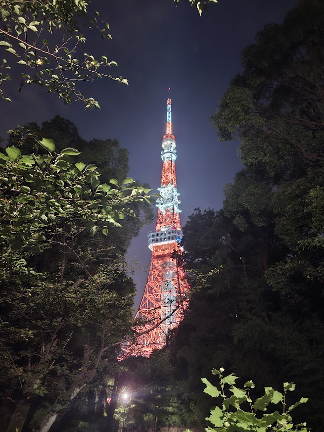
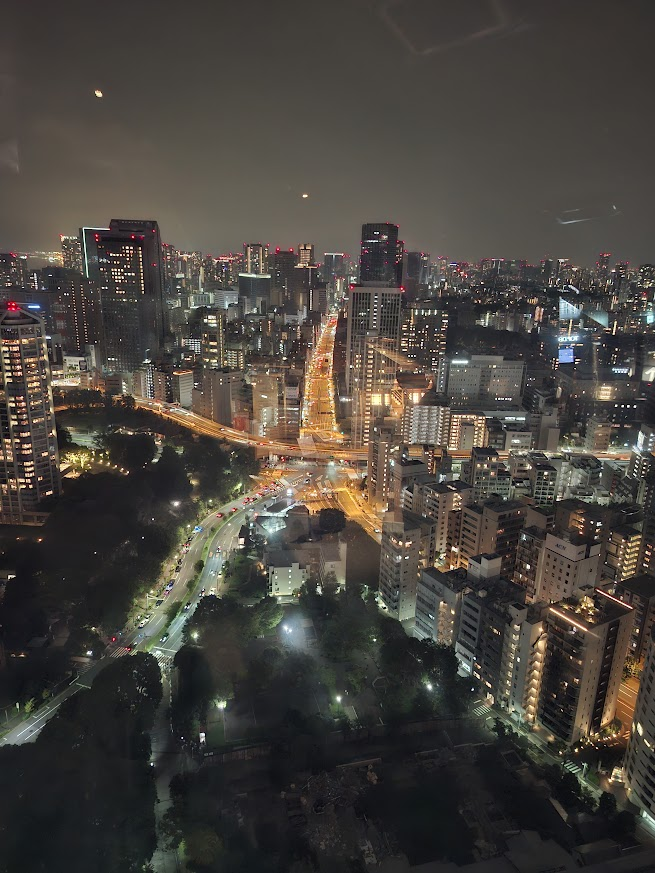
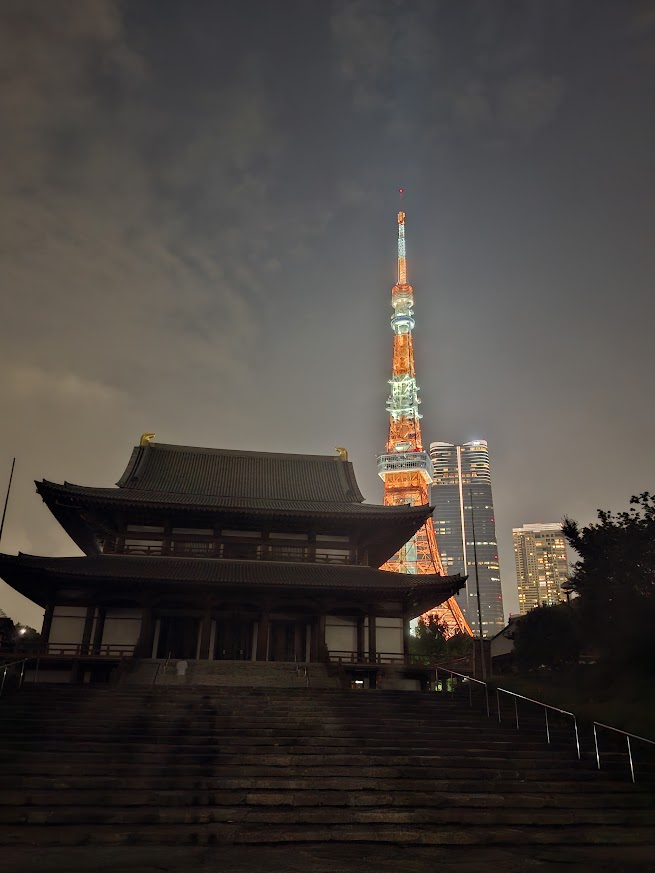
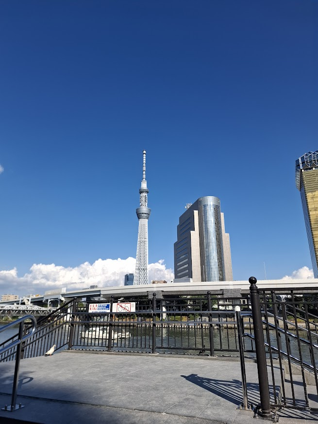
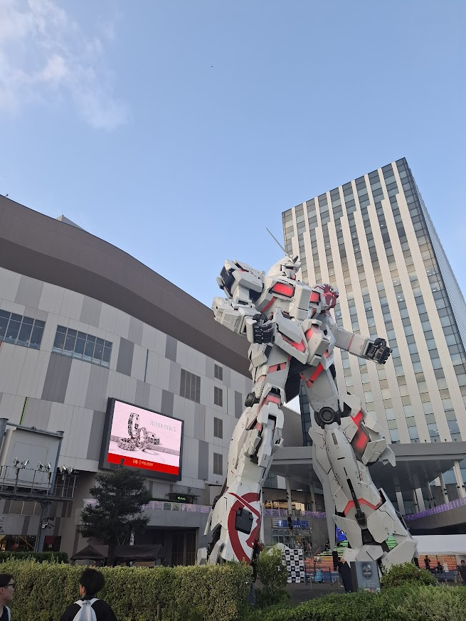
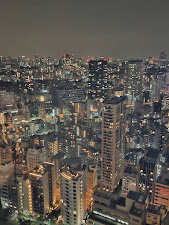
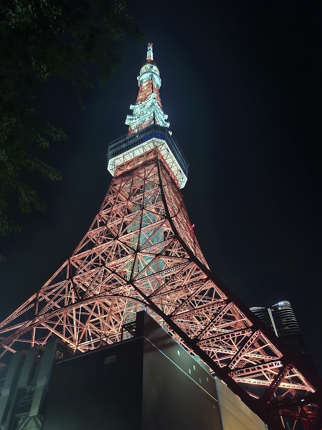

港區位於東京23區東南部並緊鄰東京灣，除了有經典地標東京鐵塔外，還能搭乘水上巴士前往充滿海風與娛樂設施的台場地區。

東京灣水上巴士（前往台場）
搭乘水上巴士沿著隅田川與東京灣航行前往台場，沿途可以從海面上欣賞彩虹大橋與東京灣岸的壯闊高樓景色。

台場購物廣場（實物大獨角獸鋼彈立像）
矗立在 DiverCity Tokyo Plaza 廣場前的 1:1 巨大獨角獸鋼彈，白天氣勢十足，定時還會有帥氣的變身與聲光燈光秀。

東京鐵塔
東京最具代表性的紅白色經典地標，無論白天或夜晚點燈後都非常迷人，是來到港區不可錯過的風景。
旅遊照片紀錄





